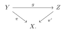

Theorem 11.1.13. Each big and nef b-divisor $\mathbb {D}$ over $X$ can be realized as $\mathbb {D}(T)$ for some $T\in \mathbb {D}_ X$. Furthermore, we may always assume that $T$ is $\mathcal{I}$-good.
Chapter 17 · B-divisors and restriction · Tag EA1E72841C6D
Theorem 11.1.13
From Singularities in global pluripotential theory · Theorem 11.1.13
Proof. Fix a big and nef b-divisor $\mathbb {D}$ over $X$.
For each $\pi \colon Y\rightarrow X$, we take a current with minimal singularities $T_ Y$ in $\mathbb {D}_ Y$. We claim that $\mathbb {D}(\pi _*T_ Y)$ coincides with $\mathbb {D}$ up to the level of $Y$: For any modification $\pi '\colon Z\rightarrow X$ dominated by $\pi $ through a morphism $g\colon Y\rightarrow Z$, we have
\[ \mathbb {D}_ Z=\mathbb {D}(\pi _*T_ Y)_ Z. \]
The notations are summarized in the following commutative diagram:
11.10

After unfolding the definitions, this means
\[ \operatorname{Reg}(\pi '^*\pi _*T_ Y)\in \mathbb {D}_ Z. \]
Note that
\[ \operatorname{Reg}(\pi '^*\pi _*T_ Y)=\operatorname{Reg}(\pi '^* \pi '_* g_*T_ Y). \]
Due to proposition 1.7.15 and proposition 3.2.12, we know that $\mathbb {D}_ Y$ is modified nef and big. In particular, $T_ Y$ is non-divisorial, hence so is $g_*T_ Y$ by 1.7.16. It follows from 7.3.10 that
\[ \operatorname{Reg}(\pi '^* \pi '_* g_*T_ Y)=\operatorname{Reg}(g_*T_ Y)=g_*T_ Y\in \mathbb {D}_ Z. \]
Note that
11.11
\begin{equation} \label{eq:vol_unif_bound} \operatorname{vol}T_ Y\geq \operatorname{vol}\mathbb {D}>0. \end{equation}
Next we claim that the $P$-singularity types of the net $(\pi _*T_ Y)_ Y$ form a decreasing net.
To see this, let us fix a diagram as (11.10). We need to show that
\[ \pi _*T_ Y\preceq _ P \pi '_*T_ Z. \]
Since $T_ Z$ has minimal singularities, we have $g_*T_ Y\preceq _{\mathcal{I}} T_ Z$. In particular, 11.1.12 guarantees that $\pi _*T_ Y\preceq _{\mathcal{I}} \pi '_*T_ Z$. But by corollary 7.3.12 and example 7.1.7, both $\pi _*T_ Y$ and $\pi '_*T_ Z$ are $\mathcal{I}$-good, so there is no difference between the $P$-preorder and the $\mathcal{I}$-preorder in this case. Our assertion follows.
Next observe that the net $(\pi _*T_ Y)_ Y$ is decreasing with respect to the $P$-preorder and has a $d_ S$-limit as a consequence of (11.11) and corollary 6.2.13. Take a closed positive $(1,1)$-current $T\in \mathbb {D}_ X$ such that
\[ \pi _*T_ Y\xrightarrow {d_ S}T. \]
It follows from proposition 11.1.11 that
\[ \mathbb {D}(\pi _*T_ Y)\to \mathbb {D}(T). \]
Therefore, we conclude that
\[ \mathbb {D}(T)=\mathbb {D}. \]
Thanks to theorem 11.1.10, $\operatorname{vol}T>0$. Write $T=\theta +\mathrm{dd}^{\mathrm{c}}\varphi $ for some $\varphi \in \mathrm{PSH}(X,\theta )$, then
\[ T'\coloneqq \theta +\mathrm{dd}^{\mathrm{c}}P_{\theta }[\varphi ]_{\mathcal{I}} \]
is $\mathcal{I}$-good, non-divisorial and $\mathbb {D}(T')=\mathbb {D}(T)$. $\square$